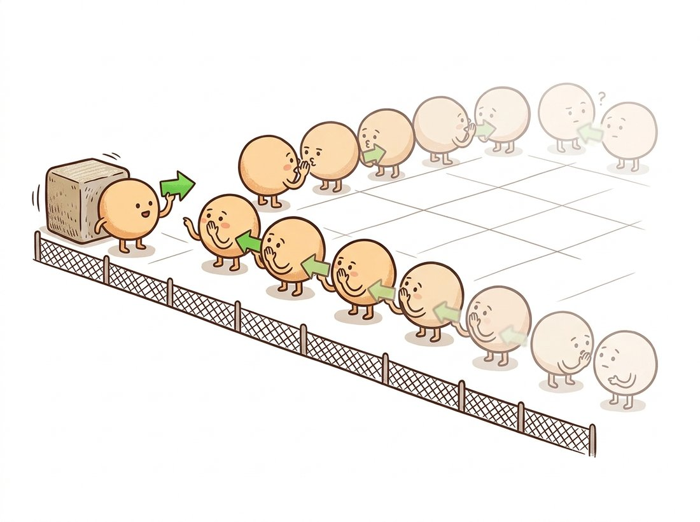

"I had no gradient, no texture, no information of any kind, and yet I have been assigned a velocity. My neighbors voted. Apparently this is called regularization."
A Peer-Pressured Pixel in a Flat Region
Dense optical flow assigns a motion vector to every pixel by turning estimation into energy minimization: agree with the data where there is data, and agree with your neighbors where there is not. Horn and Schunck wrote that bargain as a single integral in 1981, and forty years of dense flow research, through robust penalties, TV-L1, and coarse-to-fine warping, has been a sequence of better terms for the same energy. This section builds Horn-Schunck from scratch, meets the practical OpenCV workhorses (Farneback, DIS), and learns to read the HSV flow visualizations used everywhere from benchmark papers to the video models of Chapter 26.
Section 15.2 computed excellent flow at corners and refused to answer anywhere else. Many applications cannot accept the refusal. Motion segmentation needs to know which pixels move together; frame interpolation must synthesize every in-between pixel; video compression, action recognition, and the temporally consistent generation of Chapter 36 all want motion everywhere. Dense flow is the answer, and the aperture problem guarantees it cannot come from data alone: most pixels are flat or edge-like, so most of any dense field is necessarily inference. The question is how to infer with discipline.
1. The Horn-Schunck Energy Intermediate
Horn and Schunck's move was to stop solving pixels independently and instead score entire candidate flow fields $(u(x,y), v(x,y))$ with a global energy:
$$ E(u, v) \;=\; \iint \underbrace{\left( I_x u + I_y v + I_t \right)^2}_{\text{data term}} \;+\; \alpha^2 \underbrace{\left( \lVert \nabla u \rVert^2 + \lVert \nabla v \rVert^2 \right)}_{\text{smoothness term}} \; dx\, dy . $$
The data term is the squared OFCE residual from Section 15.1: it punishes flow that disagrees with observed brightness change. The smoothness term punishes flow fields that vary rapidly, encoding the prior that nearby pixels usually belong to the same surface and move alike. The weight $\alpha$ arbitrates: small $\alpha$ trusts data and yields noisy, gappy flow; large $\alpha$ trusts the prior and yields smooth, blurry flow. If this structure feels familiar, it should: it is the same data-plus-regularizer template as the restoration energies of Chapter 7, with flow in place of the clean image.
Before reading on, build a one-knob intuition for the data-versus-prior bargain. Run the horn_schunck function below on a single frame pair three times, changing only $\alpha$: try $\alpha = 1$, then $15$, then $80$, and render each result with the flow_to_color helper that follows. Watch two things in the colored fields. At $\alpha = 1$ the flow is grainy and speckled, with isolated pixels disagreeing with their neighbors, because the data term is trusted even where it is just noise. At $\alpha = 80$ the field turns into smooth pastel washes that bleed straight across object boundaries, the prior overruling the data. Somewhere in between is the setting where a moving object reads as a clean patch of one color against a calm background. You are feeling, in 30 seconds of re-running one cell, the same bias-variance tradeoff that governs every regularized estimator in this book.
Minimizing $E$ with the calculus of variations gives a pair of Euler-Lagrange equations (the calculus-of-variations analogue of setting a derivative to zero, here producing one optimality condition for the whole field $u$ and one for $v$). Each is obtained by differentiating the integrand with respect to the field and subtracting the divergence of its gradient with respect to the field's spatial derivatives, which turns the smoothness term into a Laplacian:
Discretizing them produces a wonderfully simple update. Approximating the Laplacian as $\nabla^2 u \approx \bar{u} - u$ (the neighborhood average minus the center) and solving the resulting $2 \times 2$ linear system for $(u, v)$ gives the Jacobi iteration below. You do not need to redo this derivation to use the result; the update below is what it yields. Writing $\bar{u}$ for the average of $u$ over a pixel's four neighbors (a discrete Laplacian rearranged, as in Chapter 3):
$$ u^{(k+1)} = \bar{u}^{(k)} - I_x \frac{I_x \bar{u}^{(k)} + I_y \bar{v}^{(k)} + I_t}{\alpha^2 + I_x^2 + I_y^2}, \qquad v^{(k+1)} = \bar{v}^{(k)} - I_y \frac{I_x \bar{u}^{(k)} + I_y \bar{v}^{(k)} + I_t}{\alpha^2 + I_x^2 + I_y^2}. $$
Read the update as a negotiation. Start from the neighborhood consensus $(\bar u, \bar v)$, then correct it just enough toward the local constraint line, with the correction scaled by how much gradient evidence the pixel actually has. Where gradients are strong, data wins; where the image is flat ($I_x = I_y = 0$), the update reduces to $u \leftarrow \bar u$: pure neighborhood averaging, which is exactly the heat-equation smoothing of Chapter 4. Information diffuses from textured regions into flat ones, iteration by iteration. Figure 15.3.1 visualizes this filling-in, the defining behavior of every global method.
2. Horn-Schunck From Scratch Intermediate
The update equations translate into remarkably little NumPy. The implementation below follows the original paper's derivative stencils and runs a fixed number of Jacobi-style sweeps; on a 640x480 pair it converges visually in a few hundred iterations and a couple of seconds.
import cv2
import numpy as np
def horn_schunck(im1, im2, alpha=15.0, n_iters=300):
"""Dense flow via Horn-Schunck (1981). Returns (u, v) in px/frame."""
im1 = im1.astype(np.float32) / 255.0
im2 = im2.astype(np.float32) / 255.0
# Derivatives averaged across both frames (the paper's 2x2x2 stencils)
kx = np.array([[-1, 1], [-1, 1]], np.float32) * 0.25
ky = np.array([[-1, -1], [1, 1]], np.float32) * 0.25
kt = np.full((2, 2), 0.25, np.float32)
Ix = cv2.filter2D(im1, -1, kx) + cv2.filter2D(im2, -1, kx)
Iy = cv2.filter2D(im1, -1, ky) + cv2.filter2D(im2, -1, ky)
It = cv2.filter2D(im2, -1, kt) - cv2.filter2D(im1, -1, kt)
u = np.zeros_like(im1)
v = np.zeros_like(im1)
avg = np.array([[0, 1, 0], [1, 0, 1], [0, 1, 0]], np.float32) / 4.0
denom = alpha**2 + Ix**2 + Iy**2
for _ in range(n_iters):
u_bar = cv2.filter2D(u, -1, avg) # neighborhood consensus
v_bar = cv2.filter2D(v, -1, avg)
t = (Ix * u_bar + Iy * v_bar + It) / denom
u = u_bar - Ix * t # consensus, corrected by data
v = v_bar - Iy * t
return u, v
u, v = horn_schunck(f0, f1, alpha=15.0)
print(f"mean speed: {np.hypot(u, v).mean():.2f} px/frame")
# Expected on a walking-pedestrian clip: mean speed: 0.83 px/frameDense flow needs a dense visualization, and the field settled on one convention: hue encodes direction, saturation or value encodes speed, using the HSV color space from Chapter 1. Once you internalize the color wheel (rightward motion red-ish, downward green-ish, and so on, depending on the wheel's rotation), you can read a flow field at a glance, which is how every flow paper presents results.
def flow_to_color(u, v):
"""Standard HSV flow rendering: hue = direction, value = speed."""
mag, ang = cv2.cartToPolar(u, v, angleInDegrees=True)
hsv = np.zeros((*u.shape, 3), np.uint8)
hsv[..., 0] = (ang / 2).astype(np.uint8) # OpenCV hue is 0..180
hsv[..., 1] = 255
hsv[..., 2] = cv2.normalize(mag, None, 0, 255,
cv2.NORM_MINMAX).astype(np.uint8)
return cv2.cvtColor(hsv, cv2.COLOR_HSV2BGR)
cv2.imwrite("flow_hs.png", flow_to_color(u, v))Horn-Schunck never lets a flat pixel decide its own velocity; it makes the pixel adopt the average opinion of its four neighbors, who adopted theirs, and so on back to the nearest pixel that actually saw an edge. A motion estimate at the center of a blank wall is therefore a rumor that travelled hundreds of hops from the wall's corner, getting blurrier with every retelling. It is the only algorithm in this book whose output quality genuinely improves if you simply let it gossip longer. The illustration below draws this gossip chain hop by hop.

3. Beyond Quadratic: Robust and Total-Variation Flow Advanced
Horn-Schunck's two quadratic penalties are also its two weaknesses, and both fail at the same place: boundaries. The quadratic data term squares outliers, so occluded pixels (which satisfy no displacement) dominate the energy. The quadratic smoothness term charges a fortune for sharp changes in flow, so the estimate smears across object boundaries where the true field genuinely jumps; Figure 15.3.1's filling-in, so helpful inside an object, becomes leakage between objects. Notice the rhyme with Chapter 7: quadratic regularization blurred image edges there, and total variation preserved them. The identical medicine works here. Replace squares with gentler penalties, the $L_1$ norm or its smooth Charbonnier approximation $\sqrt{x^2 + \epsilon^2}$, and you get the TV-L1 flow family: data outliers are tolerated rather than catastrophic, and the flow field is encouraged to be piecewise smooth with crisp motion boundaries instead of globally mushy.
The second classical upgrade handles large motion. The linearized data term still only sees sub-pixel displacement, so robust methods embed the energy in the coarse-to-fine warping scheme that Section 15.2 introduced for points: solve on a coarse pyramid level, upsample the flow, warp the second image by it, solve for the residual flow, descend. By the mid-2000s the recipe (robust penalties, graduated warping, sometimes gradient-constancy data terms) defined state-of-the-art flow, and it held the benchmark lead until deep networks arrived.
Every dense flow method between 1981 and the deep era is the same two-term energy with upgraded ingredients: a data term (brightness constancy, then gradient constancy, then census), a prior (quadratic smoothness, then TV, then nonlocal), and an optimization strategy (Jacobi sweeps, then warping pyramids, then primal-dual solvers). Nothing was discarded, only refined. Even RAFT, the network that ended the variational reign, is best understood through this lens: its correlation volume is a learned data term, and its recurrent update operator is a learned optimizer iterating toward a flow field, with the prior absorbed into weights. Recognize the energy and you can read forty years of literature, classical and deep, as one conversation.
4. The Practical Workhorses: Farneback and DIS Beginner
When you need dense flow in production OpenCV today, two non-deep options carry almost all the traffic. Farneback (2003) approximates each pixel's neighborhood with a quadratic polynomial and derives displacement from how the polynomial coefficients shift between frames; it is the default cv2.calcOpticalFlowFarneback and a reasonable all-rounder, the right pick when you want a single self-contained call with no tuning and moderate motion at offline speeds (a few frames per second on a full-resolution pair). DIS (Dense Inverse Search, 2016) is the speed champion: it computes fast inverse-compositional Lucas-Kanade matches on a grid of patches, densifies them, and runs a single variational refinement sweep, hitting hundreds of frames per second at usable quality. DIS at its fastest preset powers real-time stabilization and gesture systems on CPUs.
import cv2
prev = cv2.imread("frame_000.png", cv2.IMREAD_GRAYSCALE)
curr = cv2.imread("frame_001.png", cv2.IMREAD_GRAYSCALE)
# Option 1: Farneback, the long-standing default
flow_fb = cv2.calcOpticalFlowFarneback(prev, curr, None, pyr_scale=0.5,
levels=3, winsize=15, iterations=3,
poly_n=5, poly_sigma=1.2, flags=0)
# Option 2: DIS, much faster at comparable quality
dis = cv2.DISOpticalFlow_create(cv2.DISOPTICAL_FLOW_PRESET_MEDIUM)
flow_dis = dis.calc(prev, curr, None)
print(flow_fb.shape, flow_dis.shape) # (H, W, 2) (H, W, 2): u and v per pixel
Our from-scratch horn_schunck is 25 lines, single-scale, quadratic, and slow in pure Python. cv2.DISOpticalFlow_create().calc(prev, curr, None) replaces it with 2 lines that run two orders of magnitude faster and handle what ours cannot: the coarse-to-fine warping pyramid for large motions, patch-based inverse search, SIMD-vectorized inner loops, and a variational refinement pass with robust penalties. If you want the modern learned option with the same two-line ergonomics, torchvision.models.optical_flow.raft_large ships pretrained RAFT weights in PyTorch 2.x. The from-scratch version exists to make the energy visible; the library versions exist to ship.
5. Evaluating Flow: EPE and the Benchmarks Intermediate
Flow quality is measured by endpoint error (EPE): the Euclidean distance $\sqrt{(u - u^*)^2 + (v - v^*)^2}$ between estimated and ground-truth vectors, averaged over pixels. Ground truth is the hard part; you cannot annotate a million per-pixel vectors by hand. The field's answer was synthetic and instrumented data: MPI-Sintel renders an animated film with exact ground-truth flow (including a notoriously difficult "final" pass with motion blur and fog), and KITTI derives sparse ground truth for driving scenes from LiDAR and egomotion. Treat the numbers with respect and suspicion at once: EPE averages can hide boundary failures, which is why benchmarks also report outlier percentages and why visual inspection of the HSV rendering remains standard practice even in 2026 papers.
Who & situation: a sports-streaming startup offering synthetic slow-motion replays by interpolating 30 frames per second footage to 240 frames per second, warping frames along estimated flow to synthesize in-betweens. Problem: demo clips looked stunning until a customer's hockey footage: the puck and stick blades produced ghosting and rubber-sheet artifacts in every interpolated frame. Diagnosis traced both to flow: the puck moved 35 pixels per frame (far beyond what the chosen Farneback configuration could track) and the smoothness prior smeared flow across the stick-ice boundary, exactly the failure modes this section predicts. Decision: the team switched the flow engine to a pretrained RAFT (via torchvision), whose correlation volume handles large displacement natively, and added an occlusion check (forward-backward consistency, borrowed from Section 15.2) that fell back to frame blending in inconsistent regions rather than warping lies. Result: artifact complaints stopped, at a GPU cost the product absorbed by interpolating only replay segments rather than full streams. Lesson: interpolation quality is flow quality; budget your engineering where the motion is fastest and the boundaries sharpest, because that is where every flow method is weakest.
The lineage continues past RAFT (ECCV 2020), whose all-pairs correlation volume and recurrent updates made it the reference architecture. SEA-RAFT (ECCV 2024, arXiv:2405.14793) is the current pragmatic favorite: simplified training, a mixture-of-Laplace loss, and direct flow regression that runs at real-time rates at high resolution while reporting state-of-the-art accuracy on the Spring benchmark at publication. MemFlow (CVPR 2024, arXiv:2404.04808) and StreamFlow (NeurIPS 2024, arXiv:2311.17099) push the video setting, reusing temporal memory and multi-frame batching so flow for a stream costs far less than per-pair estimation. Meanwhile dense flow has become infrastructure: video diffusion models in Chapter 36 are evaluated on (and sometimes conditioned with) flow-based temporal-consistency measures, making a 1981 energy function's descendants part of the generative stack's quality control.
A colleague runs Horn-Schunck on footage of a single car driving through a parking lot and complains about two artifacts: (a) the asphalt around the car appears to move with it, and (b) with a different setting, the car's roof shows a noisy patchwork of inconsistent vectors. Identify which term of the energy is winning in each case, which direction $\alpha$ was set in each, and why no single $\alpha$ can fully fix both at once. What replacement for the smoothness term addresses artifact (a) more fundamentally?
Generate a synthetic pair with known ground truth: shift a textured image right by 3 pixels and down by 1 (so $u^* = 3, v^* = 1$ everywhere). Run (a) this section's horn_schunck with $\alpha \in \{1, 5, 15, 50\}$, (b) Farneback, and (c) DIS at the MEDIUM preset. For each, report mean EPE and wall-clock time. Then repeat with a 20-pixel shift. Which methods survive the large shift, and why does the single-scale Horn-Schunck fail it regardless of $\alpha$?
Compute DIS flow on three shots: a static camera with one moving object, a panning camera over a static scene, and a forward-moving camera (dashcam footage works). Render each with flow_to_color and, before reading further, write down what pattern you expect in each case. Verify: the pan should be one flat color, and the forward motion should form a radial rainbow expanding from a single point. That point is the focus of expansion; relate it to the epipole of Chapter 13, and explain what its image position tells you about the camera's heading.